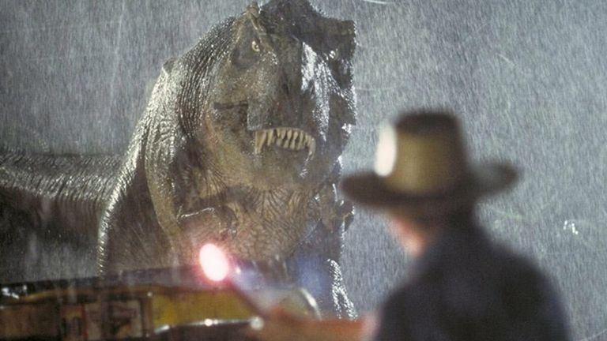
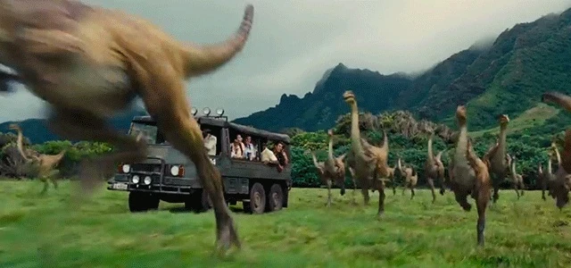
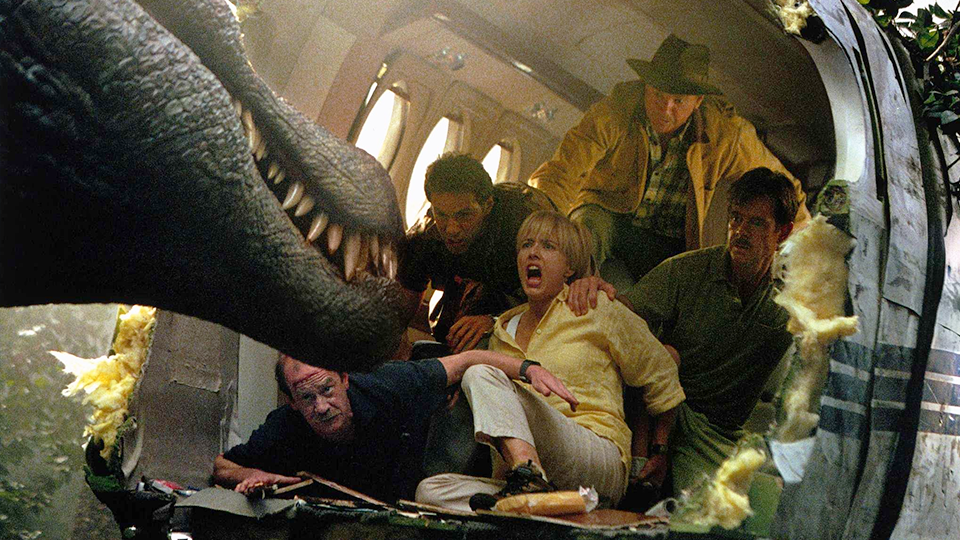
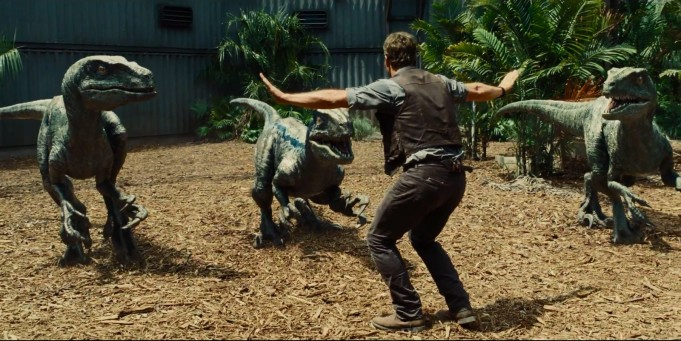
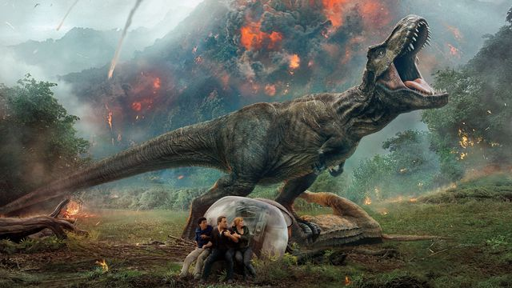
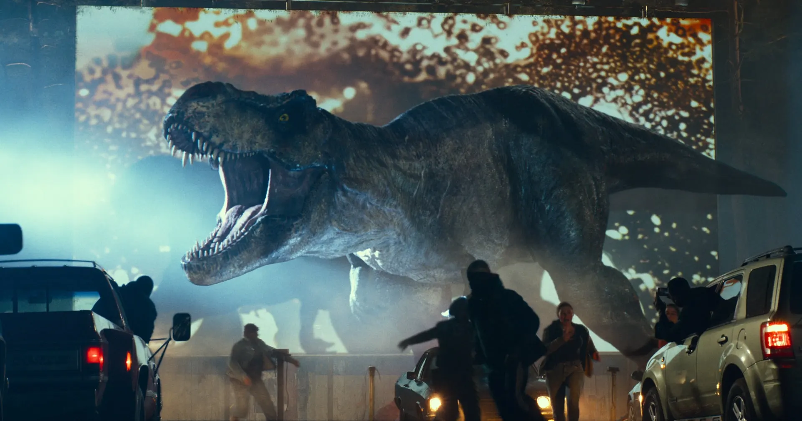

1993Jurassic Park: O Parque dos Dinossauros
O início de tudo, com a criação de um parque temático repleto de dinossauros recriados por engenharia genética.
A trajetória dos filmes da franquia Jurassic
Veja a evolução da saga ao longo dos anos, desde o primeiro clássico até os lançamentos mais recentes.

1993O início de tudo, com a criação de um parque temático repleto de dinossauros recriados por engenharia genética.

1997Uma nova aventura na Ilha Sorna revela dinossauros vivendo livremente, longe do parque original.

2001Uma missão inesperada leva os personagens de volta à ilha, agora enfrentando perigos ainda maiores.

2015O parque finalmente funciona como atração global, mas um novo predador híbrido foge do controle.

2018Os dinossauros precisam ser salvos de um desastre natural, enquanto interesses obscuros surgem no caminho.

2022Humanos e dinossauros passam a coexistir no mesmo planeta, criando um novo cenário de tensão e sobrevivência.
 2025
2025
Se passa cinco anos após os eventos de Jurassic World: Domínio, mostrando um planeta Terra cujo clima se tornou hostil e inóspito para os dinossauros. As poucas criaturas sobreviventes vivem isoladas em ambientes equatoriais que mimetizam as condições tropicais do passado